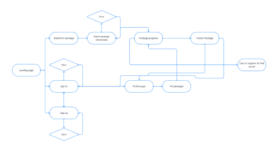
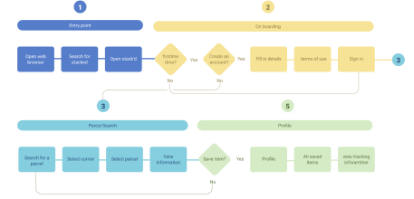
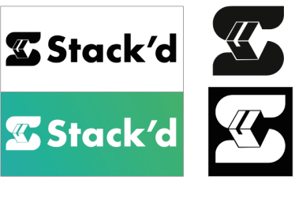

High level goals
- Design a responsive tracking desktop and mobile website that allows customers to track parcels, view previous and current parcels and log shipping information
- Create coherent and modern branding
- Design a system to reduce the amount of wasted time, optimising the layout for personal and commissional use respectively
Main challenges
- Tracking parcels are normally done through individual courier services, searching for updates has to meet all of the requirements of each courier services
- Each courier service has different tracking code layouts as well as each courier offers their customers their own features. Allowing them to all be integrated into the design fast track and simplifies the process.
- Creating a scheme that works throughout all courier services, that is considerably faster than manual checking to make it able to be integrated as a time-saving solution.
Process
The process I used to complete projects include the following

User research (Interviews)
To begin, I wanted to find out the main issues people had with tracking parcels from a personal perspective as well as a commercial one. I opened with interviews with potential users of the app to see what their views were. All three of the individuals worked for an IT company that offered support, which included buying IT products for their clients, so I was able to get the personal and commercial point of view. I found out their keys points that allowed me to make user personas that would encompass the vast majority of the potential users of the app.
- Large companies have created specific roles to stay on top of parcels coming in and being sent out
- There is a general inability to find anything that will keep an up to date list of the incoming and outgoing parcels. (each company normal just makes a spreadsheet)
- Time is spent each day chasing up the progress on items they have ordered.
Site maps
Knowing who I was designing for it make it alot easier to start to put
together a
site map.I mapped out the entire
website to understand the flow and the usability behind what the site needs
and
how it can be as user friendly as
possible.
Focusing on
- Making sure no action was more than 3-clicks away from the user
- Introducing a system that didnt require people to sign up
- Having a profile section that could link to the rest of the site floorlesly
Site Flow
After working on the site map, I made an overall site flow of how users would go around the site. Due to the site only having one primary function I was able to keep the map simple and reduce any unnesserssry steps.
User Flow
I also made a user flow of the steps the user would take. depending on the user and if they have a profile, they would go through these steps. This will allow me to design the site with a strong knowledge of what the current and next step they will do, making sure I can make it as easy and functional for the user.
Wireframes
With all of this information behind be, I felt that I could accurately make wireframes that could solve the issues that out outlined at the start of the project but with the user now in mind I could make more informed decisions about the design.
Click here to view wireframes
Focus
- Creating an initial landing page that shows the user that they are able to find their parcel, how it works and to make an account
- A system that feels fluid that is intuitive to a range of different people no matter there web knowledge
- Working on a system that is mobile-first as the research showed that for personal use the mobile will be the vast majority of the users
User Testing
Before going any further it was necessary to perform some user testing to find out what is working and what isn't. After the user testing, I organised all of the results into an affinity map to see what worked and the issues that arose, as well as potential solutions that would be included in future iterations of the site. This step of making wireframes and testing happen multiple times before I was able to move on to working on the brand and the UI
Click to enlarge
Style Guide
This began in the exploration of a logo for the site. I started by playing around with the letters and the imagery associated with the website, trying to incorporate different aspects and emotional responses to the logo. I kept the logos black and white to make sure the styles throughout the design would work with the logo irrespectively to the location or any external factors.
Layout (Grid)
Desktop
The Grid uses a symmetrical 12 column grid, this allows for the desktop site to have a fluid feel. But due to some of the pages being split in half, it allows two 6 column grids so everything works together and doesn't feel cramped.
Mobile
The mobile grid uses an 8 column grid. This is a lot more than is usually done on mobile but has been done due to the number of options and information that needs to be displayed. The higher amount of columns allows more freedom in the design and makes the design feel less boring and repetitive
Colour Scheme
The colour pallet for this site has been kept to the same two colour gradient
that has been used throughout the site and
then black and white on top for the highest contrast between the design and the
information
The reason why this gradient was chosen is due to the modern feel that it has
and the symbology behind the colours of
green and blue, meaning green for land and blue for water. This is meant to
represent the package traveling a massive
distance to your door
Iconography
The Iconography used throughout the app is comparable with travel applications. The main goal to create consistency throughout, freeing up space and creating easily interpretable icons.
Illustrations
The design uses illustrations throughout to signal to the user, the brand and
what part of the delivery process their
parcel is currently at.
The illustrations bring a little fun to the design, giving the page's character
and at first glance will inform the user
what is going on without having to read. Even though the site has a language
setting this will allow users to be able to
interpret the design, whether they are able to read the words or not.
Typography
All items in the type scale use Futura PT, making use of a variety of weight
available, Bold, Light and Book.
Futura PT is a pro variation of the 1927 Paul Renner font “Futura”. It has a
stylish and modern feel while being very
legible and scalable to the user's needs. The reason I used the “PT” version is
due to the increase in font variations
as well as the font having a more consistent x-height through the font.
The design uses large titles and smaller text, due to the design needing to
display information fast but not mass
amounts, the larger typeface speeds up interpretation and gives it a style that
suits the branding
Final Iteration
Creating the branding for the application, It needed to be a modern professional
design that focused on being
functional, so it would be suitable in a professional environment as well as in
personal.
The design needed to translate the modern feel throughout the design so I went
for a gradient colour scheme of green and
blue, that meets the current modern trends. A colour gradient has been used as
an overlay over imagery to give the
design a more complex feel as well as giving it a greater aesthetic look.
Tracking a Parcel
This flow starts from the stores home page of the app
User is able to see the wait time and choose when to book the room
The user can see how many people in from of them and when it will be ready
Once it is ready they can go straight or postpone untill they are ready
Creating an Account
This flow starts from the users home page of the app
When the user selects find a store, they can either use their location or search
On search the users can choose the store and location or select one of their faviourited stores
On the map the app shows all of the stores that are app friendly
Before choosing the store, it shows the user how busy it is and some key information
Postponing wont put them in the end of the queue, rather a place that suits them
Once they confirm the room, it will inform them where they are and gives them a room reminder
Checking orders for a company
This flow starts from the stores home page of the app
User is able to see the wait time and choose when to book the room
The user can see how many people in from of them and when it will be ready
Once it is ready they can go straight or postpone untill they are ready
The user can see how many people in from of them and when it will be ready
Once it is ready they can go straight or postpone untill they are ready
Measuring Success
This project has not been made to work as of yet, this is only the mock UX/UI behind the site. But if this project is made and were to go live I would measure success in three different ways:
- Amount of package searches made
- Amount of accounts made
- The amount of returned package tacking without errors failed searches or abandoned
A fourth measurable success that would be available is in the amount of returning users to the site mainly including in profiles that have been made and regularly checked and updated to include new tracking.
Next step
The next step for this project will be to complete a second full wave of user testing to future scrutinise the usability of the application. After further interactions of the site, then the goal will be to pass this on to a development team, in the hopes to try and get the back end of this application made.
Reflection
The UI and usability seemed to have a positive reaction when shown to users, after
asking them to complete a similar
task as the one done on the original user testing, the tasks were done faster with a
more positive response.
This passion project has helped me to further develop my UX and UI skills by showing
me that interviews and testing
prove to be one of the greatest tools when creating a project. It also showed me
that although I could be seen as the
targeted demographic, I am not the only one using the site, so referring to others
even in the same situation provides
invaluable information about the development of the application.